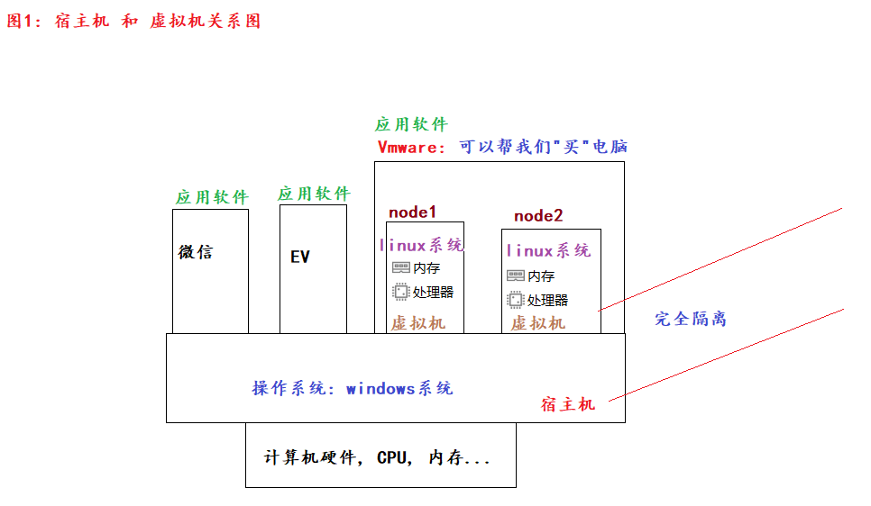
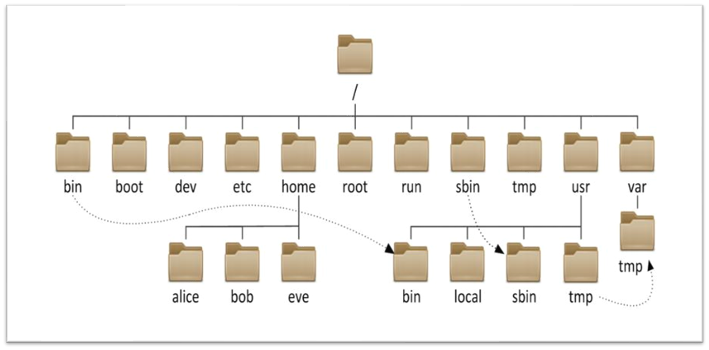
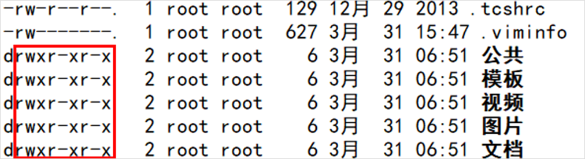
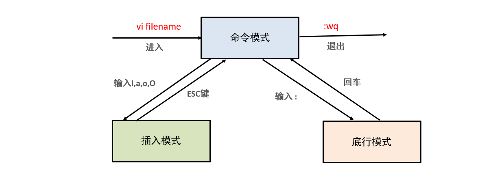

Linux 学习的重点不是背下每个命令，而是建立一套稳定的工作模型：知道自己在哪里、要操作什么对象、命令会产生什么影响、出错后如何查帮助。本讲把环境搭建、目录与文件、文本处理、进程网络、权限、Vim 和软件管理串成一条完整主线。
本讲命令以常见 GNU/Linux 环境为例。不同发行版、Shell 和软件版本可能略有差异，执行系统管理命令前应先查看
--help或man文档。
一、认识 Linux 与命令行
1. 操作系统在做什么
计算机由硬件和软件组成。操作系统位于二者之间，负责管理 CPU、内存、磁盘、网络和外设，并向应用程序提供统一接口。没有操作系统支持，普通应用无法直接、可靠地使用硬件资源。
Linux 可以从两个角度理解：
- 狭义 Linux：Linux 内核，负责进程、内存、设备和文件系统等核心能力。
- 广义 Linux：Linux 内核加系统库、命令行工具、包管理器和桌面环境组成的发行版。
常见发行版并不是“不同的 Linux 语法”，而是软件组合、发布节奏和包管理方式有所区别。
| 发行版家族 | 常见成员 | 常用包管理器 | 典型特点 |
|---|---|---|---|
| Debian 系 | Debian、Ubuntu | apt |
资料丰富，桌面和服务器都常见 |
| Red Hat 系 | RHEL、Rocky Linux、AlmaLinux | dnf，旧系统也用 yum |
企业服务器场景常见 |
| Fedora 系 | Fedora | dnf |
软件更新较快 |
2. 终端、Shell 与命令
- 终端：输入命令和显示结果的窗口或远程会话。
- Shell：解释命令的程序，常见有 Bash、Zsh。
- 命令：让系统执行某项操作的指令。
命令的一般结构如下：
command [options] [arguments]
例如：
ls -lah /var/log
ls是命令；-lah是选项组合；/var/log是操作目标。
选项和参数的含义由具体命令决定，不确定时不要猜，先查帮助。
二、准备 Linux 环境与 SSH 连接
1. 真机、虚拟机与云服务器
学习 Linux 常见有三种环境：
| 方式 | 优点 | 注意点 |
|---|---|---|
| 真机安装 | 性能完整、接近生产环境 | 安装和恢复成本较高 |
| 虚拟机 | 与宿主机隔离，快照和重装方便 | 需要分配 CPU、内存和磁盘 |
| 云服务器 | 随时远程访问，接近真实服务器 | 需要关注费用、网络与安全组 |
虚拟机软件会在宿主操作系统中模拟一套硬件，再在这套虚拟硬件上运行 Linux。虚拟机和宿主机共享真实 CPU 与内存，但系统环境彼此隔离。

虚拟机常见网络模式：
- NAT：虚拟机借助宿主机访问外部网络，适合多数学习场景。
- 桥接：虚拟机像局域网中的独立设备，直接获得同网段地址。
- 仅主机：通常只与宿主机及同模式虚拟机通信，不直接访问外网。
2. 获取地址并测试网络
进入 Linux 后，优先用 ip 命令查看网卡和地址：
ip addr ip -brief addr
常见接口名可能是 ens33、enp0s3、eth0 等；lo 是本机回环接口，地址 127.0.0.1 只代表当前机器。
在客户端测试连通性：
ping -c 4 192.168.88.161
能 ping 通只说明基础网络可能连通，不代表 SSH 服务、端口和防火墙一定配置正确。
3. 使用 SSH 远程登录
SSH 默认使用 TCP 22 端口。连接至少需要服务器地址、账号以及密码或密钥：
ssh learner@192.168.88.161 # 非默认端口 ssh -p 2222 learner@192.168.88.161 # 退出远程会话 exit
推荐做法：
- 日常使用普通账号，需要管理权限时再用
sudo； - 使用强密码，条件允许时改用 SSH 密钥；
- 不把密码写进笔记、脚本或截图；
- 云服务器还要检查安全组是否允许目标端口。
三、帮助系统与终端快捷键
1. 不记得命令时怎么查
# 简短帮助 ls --help # 完整手册，按 q 退出 man ls # 查看命令来自哪里 which python3 # 判断它是别名、内建命令还是外部程序 type cd
阅读手册时重点看：命令用途、语法、常用选项、示例和退出方式。
2. 高频快捷键
| 快捷键 | 作用 |
|---|---|
Tab |
补全命令或路径；连续按两次可查看候选 |
↑ / ↓ |
浏览历史命令 |
Ctrl + R |
反向搜索历史命令 |
Ctrl + A / Ctrl + E |
跳到命令行开头 / 结尾 |
Ctrl + C |
中断当前前台命令 |
Ctrl + L |
清屏，效果类似 clear |
Ctrl + D |
发送 EOF；空命令行时通常退出当前 Shell |
# 查看历史命令 history # 再次执行编号为 120 的历史命令，执行前要确认内容 !120
使用 !编号 会立即执行命令，涉及删除、权限或系统管理时应格外谨慎。
四、目录树、路径与导航
1. Linux 只有一棵目录树
Linux 没有 C 盘、D 盘的概念，所有目录和挂载的设备都位于根目录 / 下面。

常见目录：
| 目录 | 主要用途 |
|---|---|
/ |
整棵目录树的根 |
/home |
普通用户的家目录 |
/root |
超级管理员 root 的家目录 |
/etc |
系统和服务的配置文件 |
/usr |
大量用户空间程序、库和共享资源 |
/var |
日志、缓存、队列等经常变化的数据 |
/tmp |
临时文件；内容可能被系统定期清理 |
/opt |
可选的第三方应用软件 |
/dev |
设备文件 |
/proc |
内核和进程信息形成的虚拟文件系统 |
/boot |
启动相关文件 |
/mnt、/media |
临时或可移动设备的挂载位置 |
/tmp是临时目录，不等于带恢复能力的“回收站”。删除其中内容仍可能无法恢复。
2. 绝对路径与相对路径
- 绝对路径从
/开始，与当前位置无关，例如/home/learner/project。 - 相对路径以当前目录为参照，例如
project/data.csv。
特殊路径符号：
| 符号 | 含义 |
|---|---|
. |
当前目录 |
.. |
上一级目录 |
~ |
当前用户家目录 |
- |
前一个工作目录，常用于 cd - |
pwd # 显示当前目录 cd /etc # 使用绝对路径 cd ../var # 使用相对路径 cd ~ # 回到家目录 cd - # 返回上一个工作目录
Linux 文件名通常区分大小写，Data.csv 和 data.csv 是两个不同名称。路径中含空格时，应使用引号：
cd "My Project"
五、文件与目录操作
1. 查看目录内容：ls
ls # 当前目录，不含隐藏项 ls -a # 包含以 . 开头的隐藏项 ls -l # 长格式：类型、权限、所有者、大小、时间等 ls -lh # 长格式并显示易读的文件大小 ls -lah /var/log # 组合选项并指定目录
ll 常是 ls -l 的别名，但并非所有系统都默认提供。
2. 创建文件和目录
mkdir reports # 创建单层目录 mkdir -p project/data/raw # 递归创建多层目录 touch notes.txt # 文件不存在时创建空文件 touch a.txt b.txt c.txt # 一次创建多个文件
touch 对已存在文件主要是更新时间戳，不会清空其内容。
3. 复制、移动和重命名
cp notes.txt notes.bak # 复制并改名 cp notes.txt reports/ # 复制到目录 cp -r project project-backup # 递归复制目录 mv notes.bak archive.txt # 重命名 mv archive.txt reports/ # 移动文件 mv project reports/ # 移动目录
目标路径是否存在会影响结果。批量操作前可以先用 ls 检查源路径和目标目录。
4. 安全地删除
rm -i notes.txt # 删除前逐项确认 rm -r old-project # 递归删除目录 rm -ri old-project # 递归删除并逐项确认
rm 通常没有回收站。尤其要避免：
- 不确认当前位置就使用通配符；
- 把未校验的变量拼进删除路径；
- 为图省事长期使用
-f强制删除； - 使用管理员权限执行大范围递归删除。
删除前先执行 pwd 和 ls <目标>，确认目标准确后再操作。
六、查看、检索与组合文本
1. 查看文件内容
cat small.txt # 一次显示小文件全部内容 less large.log # 分页查看，按 q 退出 head -n 20 large.log # 前 20 行 tail -n 20 large.log # 后 20 行 tail -f app.log # 持续跟踪追加的日志，Ctrl+C 结束
大文件优先使用 less、head 或 tail，避免 cat 一次向终端输出过多内容。
2. echo 与重定向
echo "hello Linux" # 覆盖写入：原内容会被清空 echo "first line" > notes.txt # 追加写入 echo "second line" >> notes.txt # 把错误输出单独保存 ls /not-exist 2> error.log # 标准输出和错误输出都写入同一文件 some_command > run.log 2>&1
>连接标准输出并覆盖目标文件；>>追加到目标文件末尾；2>处理标准错误。
3. grep 内容检索
grep "ERROR" app.log # 查找包含 ERROR 的行 grep -n "ERROR" app.log # 同时显示行号 grep -i "error" app.log # 忽略大小写 grep -r "database_url" ./config # 递归检索目录
如果关键词以 - 开头，可使用 -- 结束选项解析：
grep -- "-debug" app.log
4. find 文件查找
find . -name "*.py" # 当前目录递归查找 Python 文件 find /var/log -type f -name "*.log" # 只匹配普通文件 find . -type d -name "cache" # 只匹配目录 find . -type f -size +100M # 查找大于 100 MiB 的文件
从根目录 / 搜索通常较慢且会遇到权限提示，优先缩小起始目录。
5. 管道：让命令协作
管道 | 把前一个命令的标准输出交给后一个命令的标准输入：
ps -ef | grep "python" cat access.log | grep " 500 " | wc -l
很多命令能直接读取文件，第二个例子也可写得更简洁：
grep " 500 " access.log | wc -l
七、归档、压缩、链接与传输
1. tar 归档与压缩
tar 先把多个文件归档为一个文件，再按需要配合 gzip 压缩。
# 只归档，不压缩 tar -cvf project.tar project/ README.md # 归档并使用 gzip 压缩 tar -czvf project.tar.gz project/ README.md # 查看归档内容，不解压 tar -tf project.tar.gz # 解压到当前目录 tar -xzvf project.tar.gz # 解压到指定目录；目标目录应先存在 mkdir -p restore tar -xzvf project.tar.gz -C restore
记忆核心选项：
c：create，创建归档；x：extract，解包；t：list，查看归档内容；z：通过 gzip 压缩或解压；v：显示处理过程，可省略；f：后面紧跟归档文件名。
2. zip 与 unzip
zip -r project.zip project/ unzip project.zip -d restore/
如果命令不存在，可通过当前发行版的包管理器安装。
3. 软链接与硬链接
| 对比 | 软链接（符号链接） | 硬链接 |
|---|---|---|
| 创建 | ln -s 目标 链接名 |
ln 目标 链接名 |
| 本质 | 保存目标路径的特殊文件 | 同一 inode 的另一个目录项 |
| 跨文件系统 | 可以 | 通常不可以 |
| 链接目录 | 可以 | 普通用户通常不允许 |
| 删除原名称后 | 可能变成断链 | 数据仍可通过其他硬链接访问 |
ln -s /opt/myapp/current/bin/myapp ~/bin/myapp ln report.txt report-latest.txt ls -li report.txt report-latest.txt
硬链接不是独立备份：多个名称仍指向同一份底层数据，内容损坏会同时体现出来。
4. 上传与下载
图形化 SSH 工具通常内置 SFTP 文件面板，也可以直接用命令：
# 上传本地文件到服务器 scp report.csv learner@192.168.88.161:/home/learner/data/ # 从服务器下载文件到当前目录 scp learner@192.168.88.161:/var/log/app.log . # 递归传输目录 scp -r project/ learner@192.168.88.161:/home/learner/
传输前确认本地与远端路径，避免覆盖同名文件。
八、进程、网络与系统服务
1. 查看和结束进程
ps -ef # 当前系统的进程快照 ps -ef | grep "python" # 按关键词筛选 pgrep -af python # 直接查找并显示完整命令行 top # 动态查看资源占用，按 q 退出
PID 是进程编号，PPID 是父进程编号。结束进程时先发送默认的 TERM 信号，让程序有机会清理资源：
kill 12345 # 等价于 kill -15 12345
只有进程无法正常退出、且已经确认 PID 时，才考虑强制终止：
kill -9 12345
强制终止不会给程序保存数据和释放资源的机会，不能作为默认选择。
2. 查看网络状态
ip addr # 网卡与 IP 地址 ip route # 路由表与默认网关 ping -c 4 example.com # 基础连通性与 DNS 测试 ss -lntp # 查看监听中的 TCP 端口及进程
旧资料常用 ifconfig，它来自 net-tools 软件包；现代系统通常优先使用 ip 与 ss。
3. 使用 systemd 管理服务
多数现代发行版使用 systemd：
systemctl status sshd # 查看服务状态，名称依发行版而异 sudo systemctl restart sshd # 重启服务 sudo systemctl enable sshd # 设置开机启动 sudo systemctl disable sshd # 取消开机启动
修改配置后，应先检查配置语法，再重载或重启服务；远程修改 SSH 和网络配置时要保留一个可用会话，避免把自己锁在服务器外。
关机和重启需要管理权限：
sudo reboot sudo shutdown -h now
九、用户、用户组与文件权限
1. 普通用户与管理员
Linux 是多用户系统。普通用户主要管理自己的家目录；root 拥有极高权限，误操作可能影响整个系统。
whoami # 当前账号 id # 当前用户及所属组 id learner # 查询指定用户 sudo command # 临时以管理员权限执行一条命令 su - learner # 切换用户并加载其登录环境
常见管理操作：
sudo groupadd analysts sudo useradd -m learner sudo passwd learner sudo usermod -aG analysts learner sudo userdel -r learner
userdel -r 会同时删除用户家目录，执行前必须确认其中没有需要保留的数据。
2. 读懂 ls -l

权限串示例：
-rwxr-xr--
- 第 1 位表示类型：
-普通文件、d目录、l符号链接； - 第 2～4 位是所有者
u的权限； - 第 5～7 位是所属组
g的权限； - 第 8～10 位是其他用户
o的权限。
r、w、x 对文件和目录的含义不同：
| 权限 | 普通文件 | 目录 |
|---|---|---|
r |
读取内容 | 列出目录项名称 |
w |
修改内容 | 创建、删除或重命名目录项 |
x |
作为程序执行 | 进入目录并访问其中对象 |
目录权限经常需要组合理解。例如只有 r 没有 x，即使能看到部分名称，也无法正常访问目录中的对象。
3. chmod 修改权限
符号写法：
chmod u+x deploy.sh # 所有者增加执行权限 chmod g-w report.csv # 所属组移除写权限 chmod u=rw,g=r,o= report.csv # 明确设置三类权限 chmod -R u=rwX,go=rX public/ # 递归设置，X 只给目录或原本可执行文件加执行位
数字写法中 r=4、w=2、x=1：
chmod 755 deploy.sh # rwxr-xr-x chmod 644 report.csv # rw-r--r-- chmod 600 secret.txt # rw-------
不要用 chmod 777 作为通用修复方案。它会给所有用户写权限，通常掩盖了所有者或分组配置问题。
修改所有者和所属组：
sudo chown learner:analysts report.csv sudo chown -R learner:analysts project/
十、使用 Vim 编辑文本
Vim 的难点不是命令多，而是它有模式。先记住“命令模式是中转站”：打开文件后默认进入命令模式，从其他模式按 Esc 也会回到命令模式。

1. 最短可用流程
vim notes.txt
- 按
i进入插入模式； - 输入或粘贴内容；
- 按
Esc回到命令模式； - 输入
:wq并回车，保存退出。
2. 常用命令
命令模式：
| 命令 | 作用 |
|---|---|
i / a |
在光标前 / 后进入插入模式 |
o / O |
在下一行 / 上一行新建并进入插入模式 |
dd / ndd |
剪切当前行 / 从当前行开始的 n 行 |
yy / nyy |
复制当前行 / n 行 |
p |
粘贴 |
u / Ctrl + R |
撤销 / 重做 |
gg / G |
文件开头 / 末尾 |
底行模式：
| 命令 | 作用 |
|---|---|
:w |
保存 |
:q |
退出；有未保存修改时会拒绝 |
:wq 或 :x |
保存并退出 |
:q! |
放弃修改并退出 |
:set number |
显示行号 |
:set nonumber |
关闭行号 |
/keyword |
向后搜索，按 n 查下一个 |
:noh |
取消搜索高亮 |
3. 遇到交换文件警告
出现 E325 警告通常意味着另一个 Vim 仍在编辑文件，或上次会话异常退出：
- 先确认没有其他编辑会话；
- 重要修改可使用
vim -r 文件名尝试恢复； - 检查并保存恢复内容；
- 确认交换文件不再需要后再删除。
不要看到警告就直接删除 .swp，否则可能丢失未恢复的修改。
十一、使用包管理器安装软件
先确认发行版：
cat /etc/os-release
1. Red Hat / Fedora 家族
现代系统通常使用 dnf：
sudo dnf search tree sudo dnf install tree sudo dnf upgrade sudo dnf remove tree
较旧的系统可能使用 yum，基本操作类似：
sudo yum search tree sudo yum install tree sudo yum remove tree
2. Debian / Ubuntu 家族
sudo apt update apt search tree sudo apt install tree sudo apt remove tree
包管理注意事项：
- 不从不可信来源复制并执行安装脚本；
- 不为解决依赖问题随意强制卸载底层软件包；
- 不盲目覆盖系统软件源配置；
- 执行大版本升级前先阅读发行版说明并备份数据。
十二、一条完整的 Linux 练习路径
下面的练习把本讲核心命令串起来，所有操作都限定在自己的家目录：
# 1. 创建练习工作区 mkdir -p ~/linux-lab/{data,backup,logs} cd ~/linux-lab # 2. 创建并写入文件 echo "python=3" > data/config.txt echo "debug=false" >> data/config.txt cat data/config.txt # 3. 复制、查找和检索 cp data/config.txt backup/config.txt find . -type f -name "*.txt" grep -rn "debug" . # 4. 查看权限 ls -lah data backup chmod 600 data/config.txt ls -l data/config.txt # 5. 创建归档并查看内容 tar -czf linux-lab.tar.gz data backup tar -tf linux-lab.tar.gz # 6. 回到家目录，确认后删除练习目录 cd ~ ls -ld ~/linux-lab rm -ri ~/linux-lab
完成后应能回答四个问题：
- 当前命令在哪个目录执行？
- 使用的是绝对路径还是相对路径？
- 命令会读取、覆盖、追加、移动还是删除数据？
- 如果不确定参数含义，应该去哪里查？
掌握这套判断框架，比单纯背命令更能避免误操作，也更接近真实的服务器工作方式。